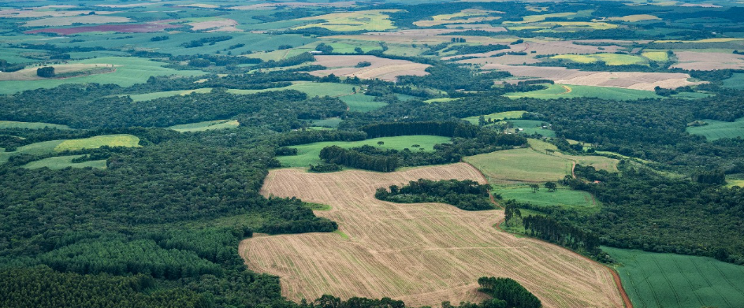
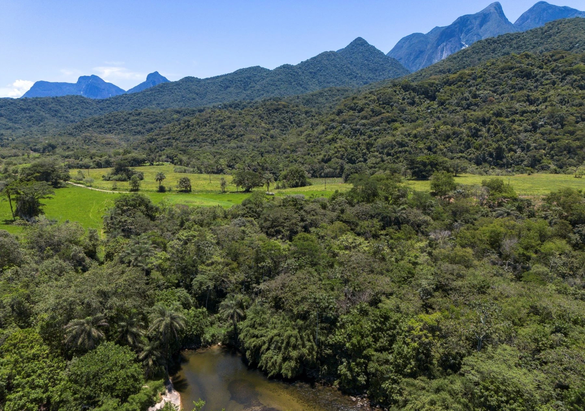
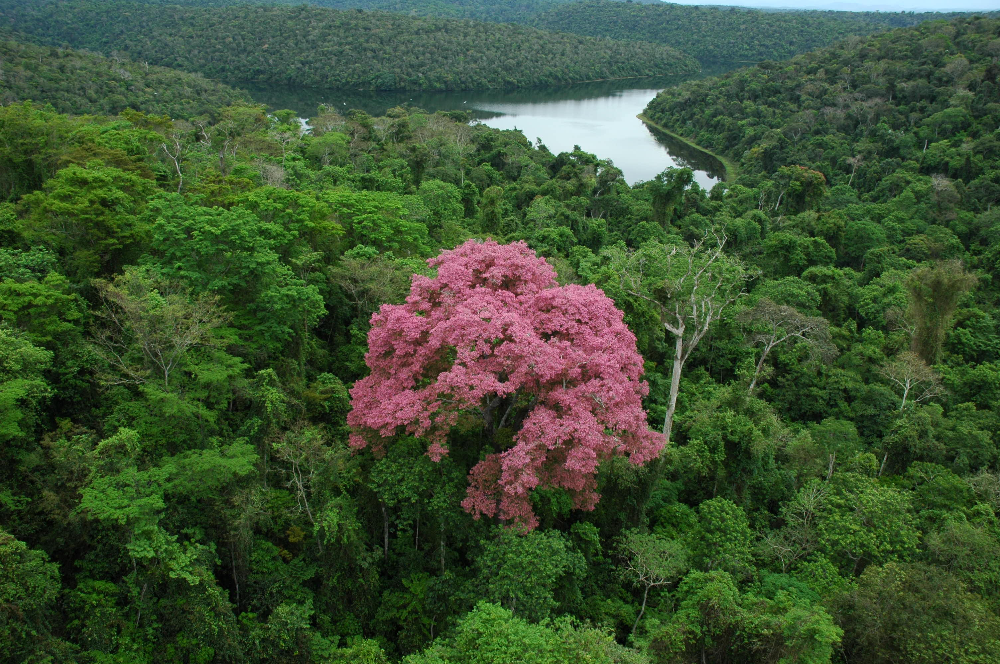

Flora
Flora
Recuperação da floresta
Conheça grupos focados na recuperação da floresta e a importância dessa pauta.
04/05/2026

A Mata Atlântica é um dos biomas mais importantes do mundo, conhecida por sua enorme biodiversidade e pela presença de milhares de espécies de animais e plantas. Porém, ao longo dos anos, grande parte dessa floresta foi destruída pelo desmatamento, pela expansão urbana, pela agricultura e pela exploração excessiva dos recursos naturais. Por isso, a recuperação da Mata Atlântica se tornou essencial para proteger o meio ambiente e garantir o equilíbrio da natureza.
A fauna desse bioma é extremamente rica e diversa. Na Mata Atlântica vivem animais como micos-leões-dourados, onças-pintadas, preguiças, antas, tucanos e diversas espécies de aves, anfíbios e insetos. Muitos desses animais ajudam no funcionamento da floresta, participando da dispersão de sementes, da polinização das plantas e do equilíbrio das cadeias alimentares.
Para recuperar áreas degradadas, são realizadas ações como o plantio de árvores nativas, a proteção de rios e nascentes e o cuidado com habitats naturais. Essas iniciativas permitem que a vegetação volte a crescer e que muitos animais retornem ao ambiente em que viviam. Além de beneficiar a fauna e a flora, essas ações ajudam na produção de água, na melhoria da qualidade do ar e na regulação do clima.
Diversas ONGs e instituições ambientais participam desse trabalho. A Fundação SOS Mata Atlântica desenvolve campanhas de preservação e monitora o desmatamento do bioma. Já o Instituto Terra, criado por Sebastião Salgado e Lélia Wanick Salgado, realiza projetos de reflorestamento e educação ambiental, tendo plantado milhões de árvores em áreas degradadas. Outras organizações também atuam na proteção da Mata Atlântica, promovendo projetos ambientais e incentivando a conscientização da população.
Assim, preservar e recuperar a Mata Atlântica é fundamental para garantir a sobrevivência de inúmeras espécies e proteger um dos patrimônios naturais mais importantes do Brasil.


